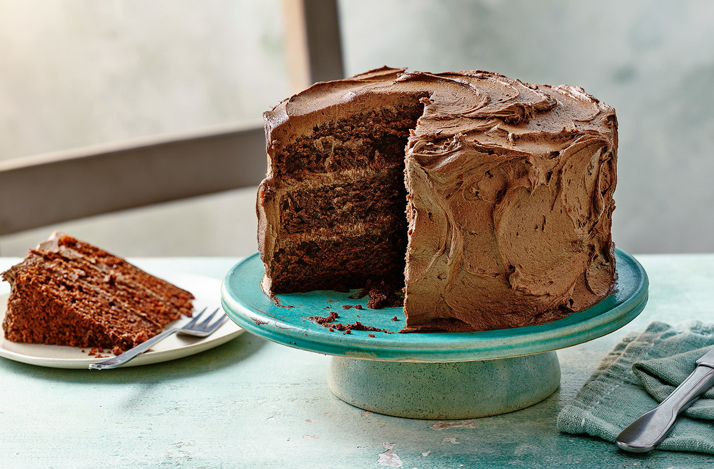

Magic Recieps
Chocolet Cake

- 350ml unsweetened almond milk-alternative
- ½ tbsp cider vinegar
- 260g light soft brown sugar
- 150ml sunflower oil, plus extra for greasing
- 1 egg, beaten
- 1 tsp vanilla extract
- 220g self-raising flour
- 220g self-raising flour
- 1 tsp baking powder
- 80g cocoa powder
Method
- Heat the oven to gas 4, 180°C, fan 160°C. Grease and line 3 x 18cm loose bottomed cake tins with nonstick baking paper. Mix the almond milk-alternative and vinegar together in a mixing bowl, then whisk in the sugar, sunflower oil and vanilla until well combined.
- Mix the flour, baking powder and cocoa powder together in another bowl, then fold into the wet mixture until just combined. Divide between the cake tins, smooth the tops, then bake for 20 minutes, until a skewer inserted into the centre comes out clean. Allow to cool in the tins for 15 minutes, then remove to a wire rack to cool completely.
- Meanwhile, make the icing. Put the spread into a mixing bowl. Mix the icing sugar and cocoa powder together in a separate bowl, then gradually whisk into the spread until well combined. Whisk in the vanilla. Chill for 15 minutes or until ready to ice the cake.
- Put one sponge onto a plate or cake stand and top with 5 tbsp icing, then add the second sponge and repeat with the third. Top with the final sponge and cover the entire cake with the remaining icing, swirling with a spoon to decorate.